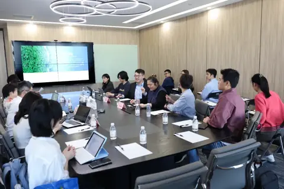
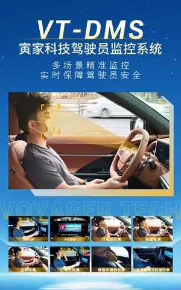

042025
深化校企交流共話兩岸融合，寅家科技開通2025臺青實習直通車
2025年4月15日，在上海市臺協浦東工委會組織下，以復旦大學為主的20餘名臺灣青年學子走進寅家科技，開啟了一場以“科技探索+職業成長”為核心的深度參訪活動。此…
News Center

2025年4月15日，在上海市臺協浦東工委會組織下，以復旦大學為主的20餘名臺灣青年學子走進寅家科技，開啟了一場以“科技探索+職業成長”為核心的深度參訪活動。此…

2025年3月26-28日，第二十屆汽車燈具產業發展技術論壇暨上海國際汽車燈具展覽會（ALE）在崑山花橋國際博覽中心盛大舉行。寅家集團旗下上海宇宙VT-Smar…

近日，搭載VT-DMS（駕駛員監控系統）的國際知名品牌汽車已在西班牙權威認證機構依據歐盟 (EU) 2023/2590…
Video

「從地面智能到低空經濟和具身智能，寅家科技要做的不只是汽車行業，或是某個領域的參與者，我們希望在多元賽道做中國智能出行行業的長期建設者。」